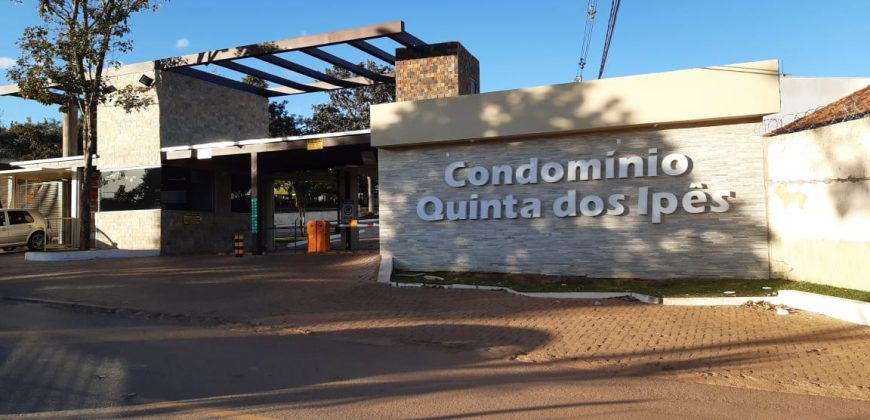

Condomínio Quinta dos Ipês
O Condomínio Quintas dos Ipês é um dos locais onde atendemos nossos clientes. Levamos pães de queijo e bolos preparados com ingredientes selecionados, mantendo o sabor caseiro e a qualidade que fazem parte da nossa história. Buscamos oferecer praticidade e produtos fresquinhos para toda a comunidade.
Dias e Horários de Atendimento
Segunda-feira
07:00h às 13:00h
Terça-feira
07:00h às 13:00h
Quinta-feira
07:00h às 13:00h
Sábado
07:00h às 13:00h
Domingo
07:00h às 13:00h
